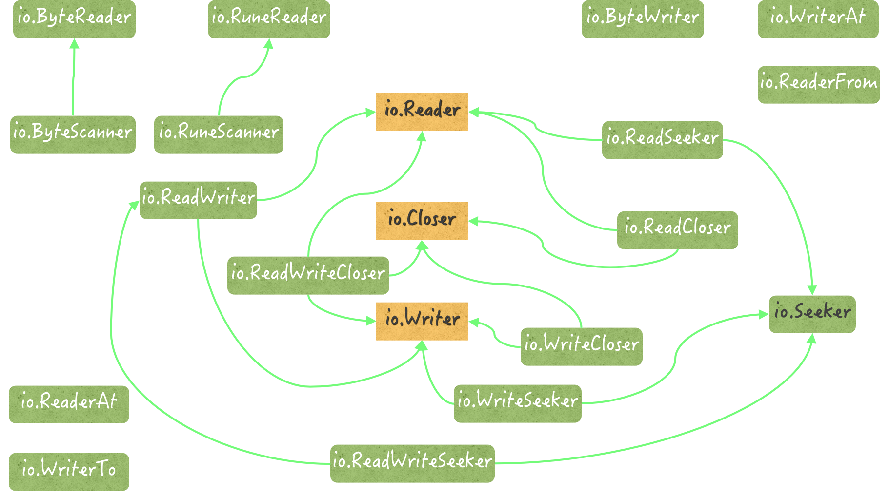

- 00 导读 写给0基础入门的Go语言学习者.md.html
- 00 导读 学习专栏的正确姿势.md.html
- 00 开篇词 跟着学，你也能成为Go语言高手.md.html
- 01 工作区和GOPATH.md.html
- 02 命令源码文件.md.html
- 03 库源码文件.md.html
- 04 程序实体的那些事儿（上）.md.html
- 05 程序实体的那些事儿（中）.md.html
- 06 程序实体的那些事儿 （下）.md.html
- 07 数组和切片.md.html
- 08 container包中的那些容器.md.html
- 09 字典的操作和约束.md.html
- 10 通道的基本操作.md.html
- 11 通道的高级玩法.md.html
- 12 使用函数的正确姿势.md.html
- 13 结构体及其方法的使用法门.md.html
- 14 接口类型的合理运用.md.html
- 15 关于指针的有限操作.md.html
- 16 go语句及其执行规则（上）.md.html
- 17 go语句及其执行规则（下）.md.html
- 18 if语句、for语句和switch语句.md.html
- 19 错误处理（上）.md.html
- 20 错误处理 （下）.md.html
- 21 panic函数、recover函数以及defer语句 （上）.md.html
- 22 panic函数、recover函数以及defer语句（下）.md.html
- 23 测试的基本规则和流程 （上）.md.html
- 24 测试的基本规则和流程（下）.md.html
- 25 更多的测试手法.md.html
- 26 sync.Mutex与sync.RWMutex.md.html
- 27 条件变量sync.Cond （上）.md.html
- 28 条件变量sync.Cond （下）.md.html
- 29 原子操作（上）.md.html
- 30 原子操作（下）.md.html
- 31 sync.WaitGroup和sync.Once.md.html
- 32 context.Context类型.md.html
- 33 临时对象池sync.Pool.md.html
- 34 并发安全字典sync.Map （上）.md.html
- 35 并发安全字典sync.Map (下).md.html
- 36 unicode与字符编码.md.html
- 37 strings包与字符串操作.md.html
- 38 bytes包与字节串操作（上）.md.html
- 39 bytes包与字节串操作（下）.md.html
- 40 io包中的接口和工具 （上）.md.html
- 41 io包中的接口和工具 （下）.md.html
- 42 bufio包中的数据类型 （上）.md.html
- 43 bufio包中的数据类型（下）.md.html
- 44 使用os包中的API （上）.md.html
- 45 使用os包中的API （下）.md.html
- 46 访问网络服务.md.html
- 47 基于HTTP协议的网络服务.md.html
- 48 程序性能分析基础（上）.md.html
- 49 程序性能分析基础（下）.md.html
- 尾声 愿你披荆斩棘，所向无敌.md.html
- 新年彩蛋 完整版思考题答案.md.html
- 捐赠
41 io包中的接口和工具 （下）
上一篇文章中，我主要讲到了io.Reader的扩展接口和实现类型。当然，io代码包中的核心接口不止io.Reader一个。
我们基于它引出的一条主线，只是io包类型体系中的一部分。我们很有必要再从另一个角度去探索一下，以求对io包有更加全面的了解。
下面的一个问题就与此有关。
知识扩展
问题：io包中的接口都有哪些？它们之间都有着怎样的关系？
我们可以把没有嵌入其他接口并且只定义了一个方法的接口叫做简单接口。在io包中，这样的接口一共有11个。
在它们之中，有的接口有着众多的扩展接口和实现类型，我们可以称之为核心接口。io包中的核心接口只有3个，它们是：io.Reader、io.Writer和io.Closer。
我们还可以把io包中的简单接口分为四大类。这四大类接口分别针对于四种操作，即：读取、写入、关闭和读写位置设定。前三种操作属于基本的I/O操作。
关于读取操作，我们在前面已经重点讨论过核心接口io.Reader。它在io包中有5个扩展接口，并有6个实现类型。除了它，这个包中针对读取操作的接口还有不少。我们下面就来梳理一下。
首先来看io.ByteReader和io.RuneReader这两个简单接口。它们分别定义了一个读取方法，即：ReadByte和ReadRune。
但与io.Reader接口中Read方法不同的是，这两个读取方法分别只能够读取下一个单一的字节和Unicode字符。
我们之前讲过的数据类型strings.Reader和bytes.Buffer都是io.ByteReader和io.RuneReader的实现类型。
不仅如此，这两个类型还都实现了io.ByteScanner接口和io.RuneScanner接口。
io.ByteScanner接口内嵌了简单接口io.ByteReader，并定义了额外的UnreadByte方法。如此一来，它就抽象出了一个能够读取和读回退单个字节的功能集。
与之类似，io.RuneScanner内嵌了简单接口io.RuneReader，并定义了额外的UnreadRune方法。它抽象的是可以读取和读回退单个Unicode字符的功能集。
再来看io.ReaderAt接口。它也是一个简单接口，其中只定义了一个方法ReadAt。与我们在前面说过的读取方法都不同，ReadAt是一个纯粹的只读方法。
它只去读取其所属值中包含的字节，而不对这个值进行任何的改动，比如，它绝对不能去修改已读计数的值。这也是io.ReaderAt接口与其实现类型之间最重要的一个约定。
因此，如果仅仅并发地调用某一个值的ReadAt方法，那么安全性应该是可以得到保障的。
另外，还有一个读取操作相关的接口我们没有介绍过，它就是io.WriterTo。这个接口定义了一个名为WriteTo的方法。
千万不要被它的名字迷惑，这个WriteTo方法其实是一个读取方法。它会接受一个io.Writer类型的参数值，并会把其所属值中的数据读出并写入到这个参数值中。
与之相对应的是io.ReaderFrom接口。它定义了一个名叫ReadFrom的写入方法。该方法会接受一个io.Reader类型的参数值，并会从该参数值中读出数据,并写入到其所属值中。
值得一提的是，我们在前面用到过的io.CopyN函数，在复制数据的时候会先检测其参数src的值，是否实现了io.WriterTo接口。如果是，那么它就直接利用该值的WriteTo方法，把其中的数据拷贝给参数dst代表的值。
类似的，这个函数还会检测dst的值是否实现了io.ReaderFrom接口。如果是，那么它就会利用这个值的ReadFrom方法，直接从src那里把数据拷贝进该值。
实际上，对于io.Copy函数和io.CopyBuffer函数来说也是如此，因为它们在内部做数据复制的时候用的都是同一套代码。
你也看到了，io.ReaderFrom接口与io.WriterTo接口对应得很规整。实际上，在io包中，与写入操作有关的接口都与读取操作的相关接口有着一定的对应关系。下面，我们就来说说写入操作相关的接口。
首先当然是核心接口io.Writer。基于它的扩展接口除了有我们已知的io.ReadWriter、io.ReadWriteCloser和io.ReadWriteSeeker之外，还有io.WriteCloser和io.WriteSeeker。
我们之前提及的*io.pipe就是io.ReadWriter接口的实现类型。然而，在io包中并没有io.ReadWriteCloser接口的实现，它的实现类型主要集中在net包中。
除此之外，写入操作相关的简单接口还有io.ByteWriter和io.WriterAt。可惜，io包中也没有它们的实现类型。不过，有一个数据类型值得在这里提一句，那就是*os.File。
这个类型不但是io.WriterAt接口的实现类型，还同时实现了io.ReadWriteCloser接口和io.ReadWriteSeeker接口。也就是说，该类型支持的I/O操作非常的丰富。
io.Seeker接口作为一个读写位置设定相关的简单接口，也仅仅定义了一个方法，名叫Seek。
我在讲strings.Reader类型的时候还专门说过这个Seek方法，当时还给出了一个与已读计数估算有关的例子。该方法主要用于寻找并设定下一次读取或写入时的起始索引位置。
io包中有几个基于io.Seeker的扩展接口，包括前面讲过的io.ReadSeeker和io.ReadWriteSeeker，以及还未曾提过的io.WriteSeeker。io.WriteSeeker是基于io.Writer和io.Seeker的扩展接口。
我们之前多次提到的两个指针类型strings.Reader和io.SectionReader都实现了io.Seeker接口。顺便说一句，这两个类型也都是io.ReaderAt接口的实现类型。
最后，关闭操作相关的接口io.Closer非常通用，它的扩展接口和实现类型都不少。我们单从名称上就能够一眼看出io包中的哪些接口是它的扩展接口。至于它的实现类型，io包中只有io.PipeReader和io.PipeWriter。
总结
我们来总结一下这两篇的内容。在Go语言中，对接口的扩展是通过接口类型之间的嵌入来实现的，这也常被叫做接口的组合。而io代码包恰恰就可以作为接口扩展的一个标杆，它可以成为我们运用这种技巧时的一个参考标准。
在本文中，我根据接口定义的方法的数量以及是否有接口嵌入，把io包中的接口分为了简单接口和扩展接口。
同时，我又根据这些简单接口的扩展接口和实现类型的数量级，把它们分为了核心接口和非核心接口。
在io包中，称得上核心接口的简单接口只有3个，即：io.Reader、io.Writer和io.Closer。这些核心接口在Go语言标准库中的实现类型都在200个以上。
另外，根据针对的I/O操作的不同，我还把简单接口分为了四大类。这四大类接口针对的操作分别是：读取、写入、关闭和读写位置设定。
其中，前三种操作属于基本的I/O操作。基于此，我带你梳理了每个类别的简单接口，并讲解了它们在io包中的扩展接口，以及具有代表性的实现类型。

（ io包中的接口体系）
除此之外，我还从多个维度为你描述了一些重要程序实体的功用和机理，比如：数据段读取器io.SectionReader、作为同步内存管道核心实现的io.pipe类型，以及用于数据拷贝的io.CopyN函数，等等。
我如此详尽且多角度的阐释，正是为了让你能够记牢io代码包中有着网状关系的接口和数据类型。我希望这个目的已经达到了，最起码，本文可以作为你深刻记忆它们的开始。
最后再强调一下，io包中的简单接口共有11个。其中，读取操作相关的接口有5个，写入操作相关的接口有4个，而与关闭操作有关的接口只有1个，另外还有一个读写位置设定相关的接口。
此外，io包还包含了9个基于这些简单接口的扩展接口。你需要在今后思考和实践的是，你在什么时候应该编写哪些数据类型实现io包中的哪些接口，并以此得到最大的好处。
思考题
今天的思考题是：io包中的同步内存管道的运作机制是什么？
© 2019 - 2023 Liangliang Lee. Powered by gin and hexo-theme-book.